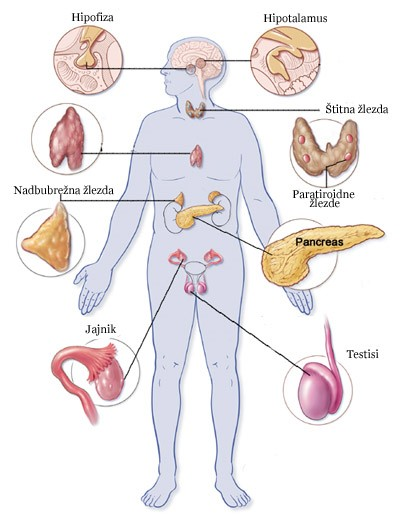
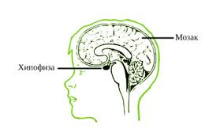
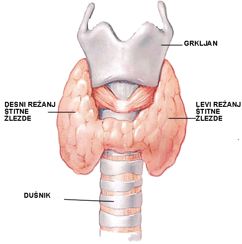
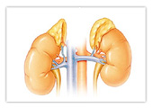
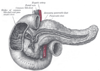

Aktivnosti u našem tijelu kontrolišu dva sistema-nervni sistem i endokrini sistem. Ova dva sistema regulišu aktivnosti na dva sasvim različita načina. Nervni sistem šalje impulse do mišićnih i žljezdanih ćelija. Impulsi se kreću veoma brzo, a odgovor na njih je trenutan. S druge strane, endokrini sistem kontroliše tijelo hemijskim materijalima-hormonima. Njihovo dejstvo je sporije u odnosu na dejstvo nervnog sistema, ali efekti hormona traju mnogo duže.
Žlijezde su grupe ćelija ili organi koji proizvode i izlučuju supstance. Egzokrine žlijezde, kakve su znojne žlijezde ili žlijezde za varenje, izlučuju svoje proizvode kroz izvodne kanale. Endokrine žlijezde nemaju izvodne kanale, već svoje proizvode-hormone izlučuju direktno u krv. Ove žlijezde se zovu i žlijezde sa unutrašnjim lučenjem. To su hipofiza, štitna žlijezda, paraštitna žlijezda, grudna žlijezda, nadbubrežne žlijezde, pankreas i polne žlijezde.
Hormoni su biološki aktivne materije, koje regulišu rast, razvoj, razmjenu materija i enerije, ponašanje... Mogu biti različitog hemijskog sastava, a djeluju u veoma malim količinama. Zahvaljujući malim molekulima lako prolaze kroz ćelijske membrane i ulaze u krvotok. Svaki hormon djeluje na određeno tkivo ili organ.
Žlijezde ne proizvode uvijek istu količinu hormona. Na primjer, lučenje polnih hormona u pubertetu je intenzivnije nego u ostalim periodima života.
Uravnotežen odnos hormona u krvi preduslov je za skladno funkcionisanje. Čak i zbog veoma malih poremećaja u lučenju hormona možemo imati velike zdravstvene probleme.
Hipofiza je žlijezda veličine graška i težine oko 1 gram. Nalazi se sa donje strane međumozga i nervnom peteljkom je vezana za hipotalamus. Hipofiza luči nekoliko hormona. Oni utiču na lučenje drugih endokrinih žlijezda, kao i na metabolizam: stimulišu rast, održavaju zapreminu krvi stalnom, regulišu promet vode, izlučivanje mokraće, lučenje mlijeka poslije porođaja.
|  | |
Hipofiza |
Štitasta žlijezda se nalazi u donjem dijelu vrata, ispod grkljana. Luči hormon tiroksin, koji kontroliše razmjenu materija (metabolizam). Pošto tiroksin utiče na proizvodnju proteina, utiče i na brzinu rasta djece. Neophodan je i za razvoj nervnog sistema. Za proizvodnju tiroksina neophodan je jod.
Uz ovu žlijezdu nalaze se 4 male paraštitaste žlijezde, koje regulišu promet kalcijuma i fosfora u organizmu.
|  | |
Štitna žlijezda |
Grudna žlijezda se nalazi u grudnoj duplji, iza grudne kosti. Luči hormone koji utiču na rast kostiju i razvoj polnih žlijezda. Ima važnu ulogu u sazrijevanju limfocita i pripada organima imunog sistema. Grudna žlijezda je aktivna samo tokom djetinjstva. Kasnije biva zamijenjena masnim tkivom.
Nadbubrežne žlijezde sastoje se od kore i srži koje proizvode različite hormone. Kora čini veći dio nadbubrežne žlijezde i luči hormone koji se zajedničkim imenom nazivaju kortikosteroidi. Ovi hormoni regulišu metabolizam hranljivih materija i minerala i značajni su za razvoj polnih karakteristika.
Srž nadbubrežne žlijezde luči 2 hormona: adrenalin i noradrenalin, koji imaju antagonističko dejstvo. Adrenalin se luči kada smo uplašeni, uzbuđeni; kada se nalazimo u opasnosti. Ovaj hormon ubrzava rad srca, povećava krvni pritisak, dovodi do širenja zjenica, ubrzava disanje... Adrenalin priprema organizam za odbranu ili napad, izaziva razdražljivost i agresiju.
|  | |
Nadbubrežne žlijezde |
Osim toga što izlučuje enzime koji imaju ulogu u varenju hrane, pankreas izlučuje i dva hormona: insulin i glukagon. Oba hormona učestvuju u metabolizmu ugljenih hidrata i regulišu nivo glukoze u krvi. Insulin smanjuje nivo glukoze u krvi, tako što stimuliše prelazak glukoze iz krvi u ćelije, kao i odlaganje glikogena u jetri i mišićima. Djelovanje glukagona je suprotno. Glukagon povećava koncentraciju šećera u krvi jer razgrađuje glikogen iz jetre.
|  | |
Pankreas ili gušterača |
Osnovna funkcija polnih žlijezda je stvaranje gameta- polnih ćelija. Polne žlijezde izlučuju i polne hormone. Pod uticajem polnih hormona sazrijevaju polne ćelije i razvijaju se osobine po kojima se muškarci razlikuju od žena. Polni hormoni se pojačano luče u doba puberteta.
Ženske polne žlijezde luče estrogen i progesteron. Pod uticajem ovih hormona razvijaju se sekundarne polne karakteristike: rastu grudi, kukovi se proširuju, tijelo dobija oblije konture, glas postaje tanji, uspostavlja se menstrualni ciklus.
Muške polne žlijezde luče testosteron, hormon koji dovodi do pojave muških sekundarnih polnih karakteristika: glas postaje dublji- mutira, rastu brada i brkovi, povećava se mišićna i koštana masa.
Hipotalamus luči hormone koji kontrolišu aktivnost hipofize. Hipofiza svojim hormonima reguliše aktivnosti ostalih endokrinih žlijezda. Tako je uspostavljena veza između nervnog i endokrinog sistema, čiji se rad međusobno usklađuje.
Hipotalamus i hipofiza reaguju na svaku promjenu količine hormona u krvi. Na primjer: kada se količina tiroksina u krvi smanji ispod određene granice, hipotalamus i hipofiza registruju ovu promjenu. Hipofiza luči hormon koji stimuliše aktivnost štitne žlijezde i štitna žlijezda počinje da izlučuje tiroksin. Kada nivo tiroksina u krvi dostigne potrebnu granicu, hipotalamus "obavještava" hipofizu i tada prestaje lučenje hormona koji stimuliše aktivnost štitne žlijezde. Usljed toga štitna žlijezda smanjuje izlučivanje tiroksina. Ovakav način održavanja hormonske ravnoteže u tijelu naziva se povratna sprega.